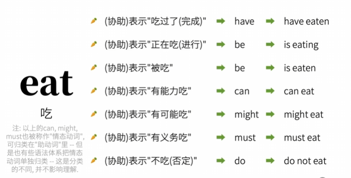

版权信息
warning
本文章为博主原创文章。遵循 CC 4.0 BY-SA 版权协议，转载请附上原文出处链接和本声明。
课程来自B站up英语兔——英语语法精讲合集 (全面, 通俗, 有趣 | 从零打造系统语法体系)，质量非常高的up，墙裂推荐。
1. 英语简单句的母体
几乎所有的英语句都是由母体——“主语+谓语”衍生而来的
主语对应人或物，是句子的主体对象。
谓语对应人或物的动作，或者发生了什么事。
——而动作则用动词来表达。根据动作类型的不同，衍生出的句子结构也就不同。
2. 由母体构建出完整简单句
动作类型，也就是谓语动词类型，是母体构建出完整简单句的绝对核心。
在英语中，动作会分为以下几类。
-
作用于主体自身，无需额外承受者
I sleep.
衍生出句式——主语+不及物动词（谓语）
那些在使用时无需动作承受者的动词，叫做不及物动词(intransitive verbs)。
-
需要动作承受者
动作的承受者就是宾语(object)。
在使用时需要动作承受者的动词，叫做及物动词(transitive verbs)。-
只需一个动作承受者
I love you.
衍生出句式——主语+谓语+宾语
-
需要两个动作承受者
I teach you English.
衍生出句式——主语+谓语+间接宾语+直接宾语。
可以看出，如果去掉间接宾语“you”，保留直接宾语“English”，句子语义依旧是完整的，反之则不是。这也是一种判断直接宾语和间接宾语的方法。
-
只需一个动作承受者，但需要补充
I consider you smart
衍生出句式——主语+谓语+宾语+宾语补足语
注意到“smart”并不是动作的承受者，只是对宾语的补充，否则句意不完整。
-
-
赋予属性的动作
you are piece of shit.
she smells nice.衍生出句式——主语+连系动词+主语补足语
这类句式的作用就是为主语赋予属性，这里的谓语（动词）只起到连接主语和主语属性的作用。同时赋予的属性实际上是对主语的补充，因此叫做主语补语，也叫表语。
这类句式的特点是谓语动词可以理解为等于（“=”）符号。
以上这些因为动作类型的不同衍生出来的5种句型基本涵盖了英语所有的简单句。
再次强调，衍生的核心就是谓语动词！我们基于谓语动词来构建出简单句的句型！
截至目前，你已经成功构建出一个简单句。
3. 为简单句添加修饰
为简单句添加修饰以表达更丰富的含义。
3.1. 使用定语来修饰主语和宾语
The little white rabbit ate a large carrot.
3.2. 使用状语来修饰谓语动词
He runs slowly.
3.3. 使用同位语来重复主语或宾语
同位语，顾名思义，就是对于某种句子成分来说，处在同一地位，行使一样的职责。主要用于指代或说明该句子成分。
Elon Musk, an entrepreneur, engineer, inventor, philanthropist, founder and CEO of Tesla, CEO and CTO of SpaceX, CEO of X, founder of Neuralink, co-founder of OpenAI, academician of the Engineering Academy, and fellow of the Royal Society, is standing in front of you.
4. 将简单句组合为复合句
复杂的句子其实就是简单句的组合。
4.1. 将简单句并列起来——并列复合句
通过连词，我们可以把简单句组合起来，形成一个长句子。
I am your dad, so you listen to me.
4.2. 将简单句作为句子成分——主从复合句
被用作句子成分的简单句叫做从句，相对的就叫做主句。
且我们很容易理解，作为句子成分的简单句（从句）并不能单独的存在并表达意思，它必须依赖主句而存在。
根据从句所用作的句子成分的不同，我们可以把从句分为主语从句、宾语从句、表语从句、同位语从句、定语从句、状语从句等等。
需要指出，一个从句的句子成分也可以是另一个简单句，可以这样无限套娃下去。
由于本篇只是从宏观角度构建英语语法框架，所以不展开细讲，举一个定语从句的例子：
This is the book that I bought yesterday.
5. 英文中谓语动词的信息量很大
英语中的谓语动词可以表达出中文的动词不能表达出的三种信息。这也是中文母语者通常觉得困难的地方，我们对比来看。
5.1. 动作时间
-
要表达“我吃苹果”这个信息。
中文：“我吃一个苹果”
英文：“I eat an apple” -
要表达“我吃苹果”这个信息发生在过去
中文：“我吃了一个苹果”
英文：“I ate an apple”
可以看到，中文往往通过添加助动词来表达这个事情是发生在过去，”吃“并不能传达动作发生的时间信息；而英文则是通过谓语动词的变形来表达这个事情发生在过去，”ate“可以传达动作发生的时间信息。
在英语中，动作的时间有四种——
以现在为时间基准的：
- 过去
- 现在
- 将来
还有以过去某个时间点为基准的将来 - 过去的将来。
5.2. 动作状态
-
要表达“我吃苹果”这个信息。
中文：“我吃一个苹果”
英文：“I eat an apple” -
要表达“我吃苹果”这个信息已经完成
中文：“我吃过一个苹果了”
英文：“I have eaten an apple”
与上一节同理，这里的”eaten“可以传达动作已完成的信息。同时注意到此处英语也添加了助动词”have“，这里的”have“其实是帮助”eaten“传达动作的时间信息（发生在过去）。
在英语中，动作的状态有四种——
- 未说明（一般状态）
- 完成状态
- 进行状态
- 不但完成而且还在继续（完成且继续进行状态）
5.3. 动作的假设，情感…
也就是说，谓语动词还会影响句子的语气。
例如虚拟语气：
If I were him, I wouldn’t do that.
如果我是他，我就不会那样做。
”were“可以表达”我并不是他“的信息，而”是“则不能。
6. 谓语动词的信息量还能更大吗？
当谓语动词与助动词结合，二者可以表达更多的信息，真可谓是”你我兄弟齐上，焉有一合之将“。

7. 不是谓语动词的动词
显而易见，动词不一定只做谓语，同样可以做主语、宾语、宾语补足语、
主语补足语、定语等等，这样的动词叫做非谓语动词。
非谓语动词不具备上一节所提到的谓语动词的功能。
非谓语动词还可以取代几乎所有的从句，从而简化句子的表达。